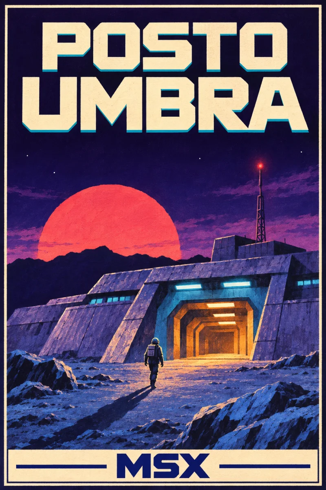

Ação em primeira pessoa para MSX1
O último sinalveio de Umbra.
No alto da serra, uma antena insiste em piscar. Entre no bunker e recupere o posto, setor por setor.
MSX1 · 64 KiB de RAM · Cartucho de 32 KiB

- Fases por campanha
- 12
- Mapas no sorteio
- 21
- Níveis de dificuldade
- 3
MSX no navegador
Entre no posto.
O jogo roda aqui mesmo, com a ROM carregada no WebMSX.

O sinal de Umbra
As luzes ainda estão acesas.
A última transmissão chegou ao anoitecer. O rádio ficou mudo, mas a luz vermelha no alto da serra piscou a noite inteira. Quando você cruza a entrada, encontra alas fechadas e criaturas nos corredores.
Recolha as chaves, abra os portões e elimine os inimigos antes de seguir até a saída. Do outro lado da serra, a central espera seu sinal.

Arte da embalagem
Pronto para o cartucho.
O bunker, o sol vermelho e a antena da abertura ganharam uma capa e um rótulo inspirados nas embalagens de MSX dos anos 80.